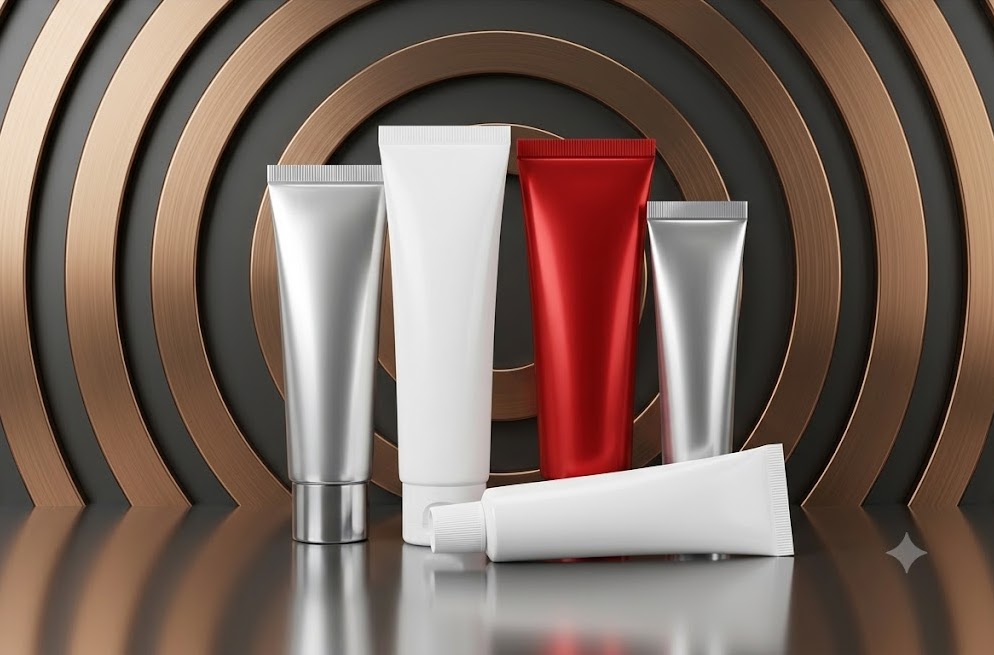

Tubes that protect
your formula to the
last squeeze.
We produce ABL/PBL laminate tubes. With fully automated equipment and strict quality control, we deliver consistent quality on schedule.

ABL · ALUMINIUM BARRIER LAMINATETubes designed
around your formula
From functional cosmetics that need protection from oxygen, moisture and light to pharmaceutical ointments, we match barrier performance and diameter to your product.
ABL Tubes
An aluminium barrier layer blocks oxygen, moisture and light. Ideal for functional creams, eye creams and pharmaceutical ointments.
PBL Tubes
Plastic barrier laminate with excellent shape recovery and appearance. Ideal for sun care, cleansers, hand creams and everyday cosmetics.
Every tube,
the same quality
Tube forming, shoulder injection and capping/sealing are completed on a single line. Vision inspection at each stage and MES-based defect data let us trace every issue to its cause.
High-speed automation
Tube welding and cutting, shoulder injection and joining, capping and aluminium sealing in one continuous process.
In-line vision inspection
Print defects, contamination, weld quality and shoulder moulding defects are rejected in real time.
MES traceability
Defect counts and process data are collected automatically for full lot-by-lot traceability.
Pharma-grade QC
Standard procedures from incoming material inspection to in-process and final inspection, including CAPA.
Whatever the formula,
there's a tube for it
We design the laminate structure around viscosity, active ingredients and how the product is used.
- Functional creams & eye creams — protects oxidation-sensitive actives such as retinol and PDRN
- Pharmaceutical ointments — pharma-level hygiene and quality control
- Sun care, cleansers, hand creams — high-speed lines built for volume
ABL LAMINATE · CROSS-SECTION (EXAMPLE)
From inquiry to shipment
Specification review, artwork proofing and sample approval come before mass production, with schedules shared at every step. Learn more →
Consultation
Formula, diameter and volume, quantity and lead time
Artwork & proofing
Print file review and colour proofing
Sample approval
Samples produced for your approval
Production & QC
In-line vision and in-process inspection
Shipment
Final inspection and delivery with certificate
Preparing tubes for a new product?
No final specs yet? No problem. Tell us about your formula and target volume, and we'll recommend the right configuration.